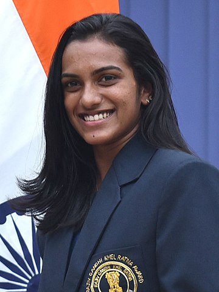

P. V. Sindhu won a bronze in women's badminton to became the first Indian female athlete and second Indian to win two consecutive Olympic medals for individual events (having won a silver in badminton in 2016).
